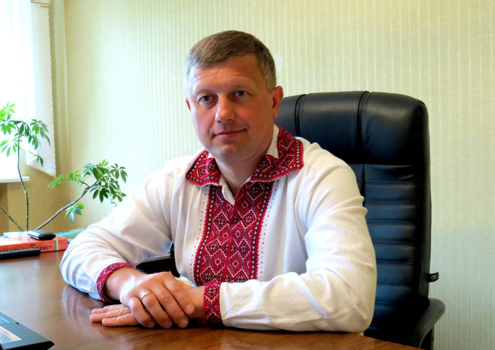

Попередній сайт
29/03/2017
Головна
Контакти
Голова районної ради

Бузун Олег Віталійович
Новини
Новини районної ради
Новини на місцях
Новини райдержадміністрації
Новини ОТГ
Оголошення
Вивчаємо законодавство
Статистика інформує
Податкова інформує
Про район
Символіка
Адміністративно-територіальний устрій
Сільські ради
Об’єднані територіальні громади
Природа
Історія
Видатні особистості
Районна рада
Загальна інформація
Структура
Голова
Заступник
Президія
Депутати
Постійні комісії
Фракції та групи
Виконавчий апарат
Районна асоціація органів місцевого самоврядування «Рада Ніжинщини»
Очищення влади
Вакансії
Нормативні документи
Законодавство
Регламент
Проекти регуляторних актів та рішень
Рішення
Протоколи сесій
Регуляторні акти
Розпорядження голови районної ради
Плани роботи
Зв'язки з громадськістю
Доступ до публічної інформації
Нормативно-правова база
Звернення громадян
Електронна приймальня
Гостьова книга
Медіа
Фотогалерея
Відеотека
Контакти
Новини
Чернігівські МЕМ: Про охорону повітряних ліній електропередач
26 Жовтня 2016 - 20:40
Повідомлення
Система вуличної каналізації та міські очисні споруди працюють в Семенівці біля 30 років. За цей час каналізаційні труби на окремих ділянках вуличних мереж за коксувалися, майже втратили пропускну спроможність. Особливо це стосується ділянок каналізації в центрі міста по периметру міського парку.
Переглядів:
Рейтинг:
Коментарі:
Далі…
У Крутах відбувся схід села
26 Жовтня 2016 - 20:40
Повідомлення
28 березня 2017 року в с. Крути відбулись загальні збори громадян. Участь у них взяли голова райдержадміністрації Вячеслав Івашин, його перший заступник Сергій Батрак, голова районної ради Олег Бузун, його заступник Наталія Березка, депутат обласної ради Валерій Гавриленко, депутат районної ради Ольга Кіт, депутат міської ради Олександр Безпалий, помічник народного депутата України Олександра Кодоли Тамара Стратілат й інші.
Переглядів:
Рейтинг:
Коментарі:
Далі…
Чернігівські МЕМ: Про охорону повітряних ліній електропередач
26 Жовтня 2016 - 20:40
Повідомлення
Система вуличної каналізації та міські очисні споруди працюють в Семенівці біля 30 років. За цей час каналізаційні труби на окремих ділянках вуличних мереж за коксувалися, майже втратили пропускну спроможність. Особливо це стосується ділянок каналізації в центрі міста по периметру міського парку.
Переглядів:
Рейтинг:
Коментарі:
Далі…
Інформація щодо подання е-декларацій присяжними Ніжинського міськрайонного суду
26 Жовтня 2016 - 20:40
Повідомлення
Днями відбулися зміни у законодавстві України й відповідно до прикінцевих положень Закону України «Про запобігання корупції» строк подання щорічної декларації для осіб, які відповідно до цього Закону подають таку декларацію вперше, продовжено до 1 травня 2017 року.
Переглядів:
Рейтинг:
Коментарі:
Далі…